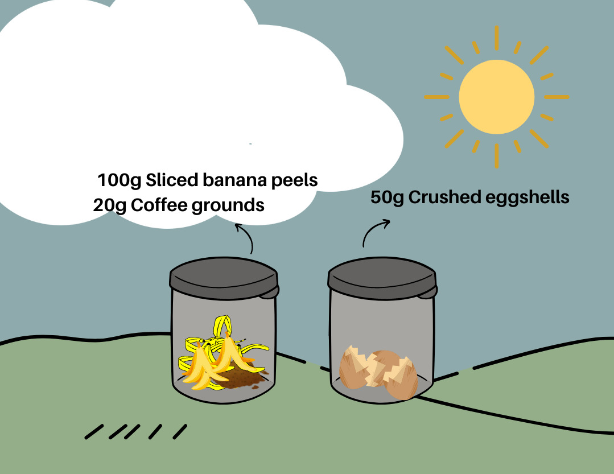
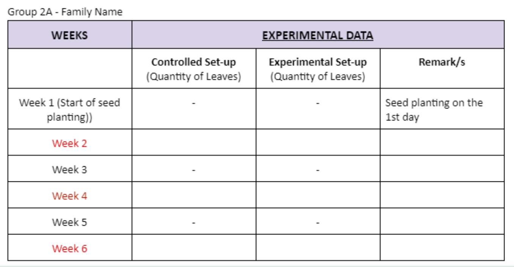
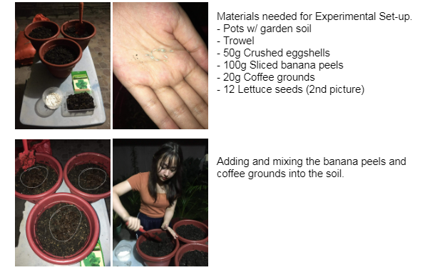
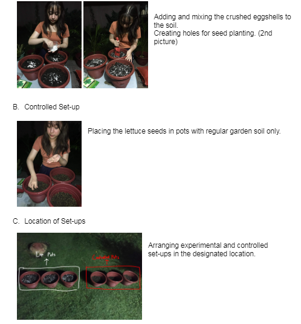

"Kitchen Scraps Effects to the Quantity of Lettuce Leaves"
I. Introduction
Background and Significance of the Study:
Composting offers several benefits to plants as it provides essential nutrients that enriches both plants and the soil. This study is about the usage of eggshells, banana peels, and coffee grounds to see if the nutrients (NPK) provided by the compost can produce a larger quantity of Lactuca Sativa leaves. We chose a mixture of crushed eggshells, banana peels, and coffee grounds as our compost since it is said to contain levels of nitrogen, phosphorus, potassium, and other micronutrients such as calcium and magnesium, which are the necessary nutrients and are associated with leaf development in leafy vegetables like Lactuca Sativa. Now, our goal is to confirm whether these nutrients provided by eggshells and banana peel compost can contribute to larger quantities of Lactuca Sativa leaves. This study aims to prove its usefulness to various communities, especially our partnered institution by assisting them with growing plants that produce larger quantities of harvest. Communities will realize the contributions of composting, such as the benefits and nutrients it can bring to sustain a healthy environment, and improve the quality and quantity of the Lactuca Sativa vegetable, and if possible, other plants. Therefore, our partnered institution can thrive and benefit with this study through the results of this experiment, where people can use the information gathered as a guide to harvesting more lettuce leaves and possible increased food supply caused by the increased amount of Lactuca Sativa plants harvested through the compost.
Problem Statement:
Can the presence of kitchen scraps compost increase the quantity of Lactuca Sativa leaves?
Hypothesis:
If there is a presence of kitchen scraps compost in a set-up, then there will be an increased quantity of Lactuca Sativa leaves that will grow in that set-up.
II. Methodology
Variables:
Independent Variable - Presence of kitchen scraps compost
Dependent Variable - The average quantity of Lactuca Sativa leaves formed
Controlled Variables- Type of Plant (Lactuca Sativa/Lettuce), Amount of seeds used per set-up, Type of soil, Amount of soil, Water distribution on both set-ups, Amount of compost in each pot (experimental group), Size of pots, Amount of sunlight, Location of the set-up
Treatments/Set-up:
Control Set-up - This set-up does not contain the presence of the compost and will only contain potting soil. There will be 3 pots only containing potting soil. No amount of kitchen scraps compost added in this set-up. - 3 replicates
Experimental Set-up 1 - The kitchen scraps compost will be present in this set-up. There will also be 3 pots in the experimental group. The soil will contain 10% of the compost. - 3 replicates
Experimental Data to be Observed:
- Number of Lactuca Sativa leaves
The number of leaves that are present in the plant will be counted once per 2 weeks. It is the dependent variable of the study and the quantitative value that determines if the hypothesis is correct.
- Effectiveness of Nitrogen present in the compost to the plant
Basis of measurement is the leaf quantity of the lettuce in the experimental group. After the duration of the experiment (6th week), the results will determine whether the compost successfully provided the nutrients (especially N) to the plant. Nitrogen, phosphorus. and potassium are the main nutrients that plants need. Out of the three, nitrogen is specifically associated with leaf growth and rapid plant growth.
Materials and Equipment:
Eggshells - 50g - Compost starting material - Crushed
Banana peelings - 100g - Compost starting material - Medium-sized Lakatan variety bananas, sliced
Coffee grounds (grinded coffee beans) - 20 g - Compost starting material
Plastic Container - 2 pcs - To store the compost starting materials
Trowel - 1 pc - For mixing the compost with soil and creating holes for the seedlings
Lettuce seedlings - 12 seedlings (2 per pot) - Plant will be tested for the experiment - Romaine lettuce
Regular garden soil - 5 kgs - Soil used for plant growth
Gardening pots - 6 pcs - For growing the plants - Should have drainage holes
Water - Enough to make soil moist - Necessary for photosynthesis and keeping the soil moist to avoid plant dehydration, can be used as compost starting material - May use a watering can if available
Procedures:

Producing the Compost Material:
1.Gather the following materials: 100g medium-sized sliced Lakatan banana peels, 50g crushed eggshells, 20g coffee grounds, 2 pcs medium sized containers
2. In one container, add the 100g sliced banana peels and 20g coffee grounds.
3. Add your 50g crushed eggshells in the other plastic container.
4. Wait for 3 weeks for the compost starting materials to decompose.
Sourcing and Preparation of Test Plants and Plant Soil
1. The plants being tested in this experiment are Lactuca Sativa plants. To grow these, we will be using its seedlings. Lettuce seedlings can be found in most gardening shops in Davao.
2. The soil used for the experiment will be regular garden soil. This soil can also be found in most gardening shops in Davao.
Preparation of Materials/Test Plants and Soil:
A. Plant Soil
Prepare the following materials for the preparation of the plant soil:
- 5 kgs of regular garden soil, this is the soil used in both set-ups.
- Kitchen scraps compost (ready to use)
- 6 pcs of gardening pots (size of at least 14 in. wide and 6 in. deep)
- 1 pc trowel, this is used for mixing the soil with the compost and adding the soil into the pot.
2. Arrange the 6 pots and separate them into two groups. Label the first group of pots as “controlled” and the other as “experimental” to avoid confusion.
3. After labeling the pots, get your regular garden soil and start adding it in the pots labeled as “controlled” but do not fill the pots completely to the rim and leave out at least 3 inches of space.
4. Repeat the process in step #3 to the pots labeled “experimental”, but instead of just adding gardening soil, add the 50g crushed eggshell, 100g sliced banana peels, and 20g coffee grounds.
5. Using your trowel, mix the soil and the compost together. Make sure that the compost and soil is mixed well.
5.. Using your trowel, mix the soil and the compost together. Make sure that it is well-mixed.
6. The plant soil is now ready, proceed to the test plant’s seed planting process.
B. Test Plant
1. Prepare the following materials for the preparation of the test plant:
- 12 pcs Lettuce seedlings
- 1 pc trowel, this time, it will be used to make a hole in each pot to place the seedlings.
- 3 garden pots labeled as “controlled” filled with the regular garden soil. (From plant soil preparation procedure)
- 3 garden pots labeled as “experimental” containing the garden soil mixed with the compost. (From plant soil preparation procedure).
3. Using your trowel, start creating 1 inch holes on the center of the soil. The holes are where you will be placing the seedlings. Do this with all the pots.
4. After creating the holes, get your 12 pieces of lettuce seedlings and start adding 2 seedlings in each pot. Place them on the 1 inch holes you made.
5. Cover up the seedlings with your soil using your trowel and make sure the seeds are completely covered.
6. Finish up by slightly watering where you planted the seedlings.
C. Location of the Set-ups:
1. Look for a place in your garden where sunlight hits the plant best. Lettuce is said to thrive under full sun.
2. Arrange the 6 pots, make sure to group the pots accordingly to the set-up they belong in.
Measurements on Test Plants

1. Prepare the following materials:
- Lettuce plants labeled as “controlled” (controlled set-up)
- Lettuce plants labeled as “experimental” (experimental set-up)
- Data table for experimental data gathering
2. Gather all the pots in both set-ups and make sure to separate the controlled and experimental test plants.
3. Using your fingers, count the amount of leaves present in the controlled test plants and do the same with the experimental test plants. Only perform this process two weeks after seed planting and so on.
4. Place your gathered data in the data table provided.
Bibliography:
US Composting council. (n.d.). US Composting Council. Plant Growth Benefits. https://www.compostingcouncil.org/
Tajer, A. (2021, August 27). What is the best fertilizer for lettuce? https://www.greenwaybiotech.com/blogs/gardening-articles/what-is-the-best-fertilizer-for-lettuce
Finley, R. (n.d.). Egg shell fertilizer: 4 benefits of eggshell fertilizer - 2022. https://www.masterclass.com/articles/egg-shell-fertilizer-guide
Four ways banana peels can help your plants. (2021, August 6). Brisbane City Council. https://www.brisbane.qld.gov.au/clean-and-green/green-home-and-community/clean-and-green-blog/four-ways-banana-peels-can-help-your-plants
Oregon State University Extension Service. (2022, October 19). Coffee grounds and composting. OSU Extension Service. https://extension.oregonstate.edu/gardening/soil-compost/coffee-grounds-composting
(2022, September 12). Root Respiration: Why plants need oxygen to thrive. https://www.moleaer.com/blog/root-respiration
Photosynthesis - NatureWorks. (n.d.). https://nhpbs.org/natureworks/nwepphotosynthesis.htm
Yang, Q. (2020). Connections Between Amino Acid Metabolisms in Plants: Lysine as an Example. Frontiers. https://www.frontiersin.org/articles/10.3389/fpls.2020.00928/full
Wright, A. L., & Odero, D. C. (2019, July 10). SL386/SS588: Nitrogen cycling and management for romaine and Crisphead lettuce grown on organic soils. Ask IFAS - Powered by EDIS. https://edis.ifas.ufl.edu/publication/SS588
Britannica, T. Editors of Encyclopaedia (2022, September 20). Cellulose. Encyclopedia Britannica. https://www.britannica.com/science/cellulose
Alberts B, Johnson A, Lewis J, et al. Molecular Biology of the Cell. 4th edition. New York: Garland Science; 2002. The Plant Cell Wall. https://www.ncbi.nlm.nih.gov/books/NBK26928/
Azone, R, Ambrosano, E, Charest, C., 2003. Nutrient acquisition in mycorrhizal lettuce plants under different phosphorus and nitrogen concentration. Plant Science, Elsevier 165 (5): 1137–1145.
Moreira, M.A., Fonotes, P.C.R., Decamargos, M.I., Camergos, M.I., 2001. Zinc and phosphorus interaction in nutrient solution affecting lettuce growth and yield. Uni Vicosa Brazil 30 (6): 903–909.
Visual Documentation

